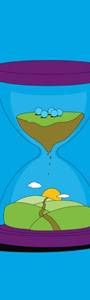

1.5 Lesson planning
Designing each lesson with digital tools is like a carefully choreographed dance of teaching methods, where every move is thoughtfully planned to fit into the whole year s learning journey.

Designing each lesson with digital tools is like a carefully choreographed dance of teaching methods, where every move is thoughtfully planned to fit into the whole year s learning journey.